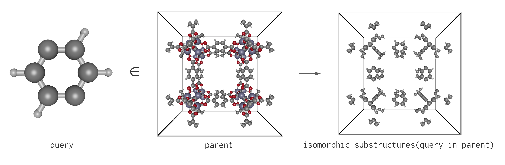

Substructure Searches
Having seen how to load inputs to PoreMatMod.jl, we can take the next step towards accomplishing our example task of functionalizing IRMOF-1. In order to identify the p-phenylene moiety in IRMOF-1, a variation of Ullmann's algorithm is applied.
Ullmann's Algorithm
Ullmann's algorithm for subgraph isomorphism is the basis of the substructure search in PoreMatMod. The algorithm is a depth-first search of the permutation tree for all possible one-to-one correspondences between the nodes of one graph (the query) and any subset of nodes of another graph (the parent). The search tree is greatly reduced in size by imposing several constraints on possible node-to-node correspondences. At each branch of the search tree, additional pruning further reduces the search space by comparing the immediate neighborhoods of potentially-corresponding nodes.
PoreMatMod.jl augments Ullmann's algorithm to include the requirement that potentially-corresponding nodes be of the same atomic species, as required by the chemical structure application. Additionally, the number of initial potential matches is reduced by further examination of each atom's local bonding neighborhood. Bonds across the unit cell boundaries of periodic materials are handled innately by the graph representation of structures in Xtals.jl.
Searching with PoreMatMod.jl

With a parent and query loaded, execute a search:
search = substructure_search(query, parent)
# output
p-phenylene.xyz ∈ IRMOF-1.cif
96 hits in 24 locations.The ∈ (in) infix operator will also perform the search:
search = query ∈ parent
# output
p-phenylene.xyz ∈ IRMOF-1.cif
96 hits in 24 locations.This returns a Search object. Its search attribute stores the Crystal data for the query and parent structures, and its results attribute is a GroupedDataFrame listing the subgraph isomorphisms grouped by location.
search.search
# output
p-phenylene.xyz ∈ IRMOF-1.ciftypeof(search.search.query)
# output
Crystalsearch.search.query.name
# output
"p-phenylene.xyz"search.results
# output
GroupedDataFrame with 24 groups based on key: location
First Group (4 rows): location = 1
Row │ location isomorphism
│ Int64 Array…
─────┼─────────────────────────────────────────────
1 │ 1 [233, 306, 318, 245, 185, 197, 4…
2 │ 1 [245, 318, 306, 233, 197, 185, 4…
3 │ 1 [306, 233, 245, 318, 185, 197, 3…
4 │ 1 [318, 245, 233, 306, 197, 185, 3…
⋮
Last Group (4 rows): location = 24
Row │ location isomorphism
│ Int64 Array…
─────┼─────────────────────────────────────────────
1 │ 24 [288, 311, 326, 301, 228, 229, 4…
2 │ 24 [301, 326, 311, 288, 229, 228, 4…
3 │ 24 [311, 288, 301, 326, 228, 229, 3…
4 │ 24 [326, 301, 288, 311, 229, 228, 3…In the chosen example, the search moiety (p-phenylene) occurs 24 times in the provided structure of the parent crystal (IRMOF-1), with 4 symmetry-equivalent search hits at each site, for a total of 96 subgraph isomorphisms.
nb_locations(search)
# output
24nb_configs_at_loc(search) # 24-element Vector{Int64}: [4, 4, 4, ..., 4]nb_isomorphisms(search)
# output
96To generate a Crystal containing only the substructures of the parent which are isomorphic to the query, use:
isomorphic_substructures(search)Molecular and Graph Symmetry
Due to the representation of molecules as graphs, PoreMatMod.jl may yield "extra" search results corresponding to different spatial isomers or moiety orientations. In some applications this may be advantageous, but in most cases it is advisable to search using the most minimal structure which uniquely matches the targeted parent moiety.
An example is searching for BDC.xyz in IRMOF-1 instead of the more minimal p-phenylene. Thanks to the two carboxyl groups, the total number of isomorphisms is multiplied by a factor of 4, due to the graph-equivalence of the oxygen atoms in each group. The number of locations at which the isomorphisms are found, however, is unchanged.
query = moiety("BDC.xyz")
search = query ∈ parent
nb_isomorphisms(search)
# output
384nb_locations(search)
# output
24Documentation
PoreMatMod.Search — TypeSearch(search_terms, results)Stores the SearchTerms used for a substructure search, and the results DataFrame returned by carrying out the search. Results are grouped by location in the parent Crystal and can be examined using nb_isomorphisms, nb_locations, and nb_configs_at_loc. Subgraph isomorphisms are encoded like
`isom = [7, 21, 9]`where isom[i] is the index of the atom in search.search.parent corresponding to atom i in search.search.query for the location and orientation specific to isom.
PoreMatMod.SearchTerms — TypeSearchTerms(parent, query)Stores the Crystal inputs used to generate a Search
PoreMatMod.substructure_search — Functionsubstructure_search(query, parent; disconnected_component=false)Searches for a substructure within a Crystal and returns a Search struct containing all identified subgraph isomorphisms. Matches are made on the basis of atomic species and chemical bonding networks, including bonds across unit cell periodic boundaries. The search moiety may optionally contain markup for designating atoms to replace with other moieties.
Arguments
query::Crystalthe search moietyparent::Crystalthe parent structuredisconnected_component::Bool=falseif true, disables substructure searching (e.g. for finding guest molecules)
PoreMatMod.nb_configs_at_loc — Functionnb_configs_at_loc(search)Returns a array containing the number of isomorphic configurations at a given location (collection of atoms) for which the specified Search results contain isomorphisms.
Arguments
search::Searcha substructureSearchobject
PoreMatMod.nb_isomorphisms — Functionnb_isomorphisms(search::Search)Returns the number of isomorphisms found in the specified Search
Arguments
search::Searcha substructureSearchobject
PoreMatMod.nb_locations — Functionnb_locations(search::Search)Returns the number of unique locations (collections of atoms) at which the specified Search results contain isomorphisms.
Arguments
search::Searcha substructureSearchobject
PoreMatMod.isomorphic_substructures — Functioniso_structs = isomorphic_substructures(s::Search)::Crystal
Returns a crystal consisting of the atoms involved in subgraph isomorphisms in the search s